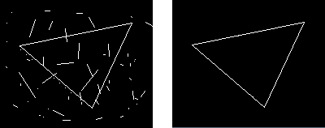

| 命令名称 | Filter_LineCheck 直线检测 |
| 命令功能 | (针对黑白图像处理)直线检测提取滤镜 |
| 语法格式 | TURING.Filter_LineCheck(Through, Num, wValue, hValue) |
| 参数说明 |
Through：整数型，默认0，方向：0全部(含斜向)，1水平，2垂直，3横纵向 Num：整数型，默认10，直线长度点数 wValue：整数型，默认0.5，横向点数或横向百分比（范围：0.1~0.99） hValue：整数型，默认0.5，纵向点数或纵向百分比（范围：0.1~0.99） |
| 返回值 | 无 |
| 按键精灵 |
复制代码
'获取图片图像数据
Call TURING.Pixel_FromPicture("C:\图形.bmp")
'直线检测提取滤镜
Call TURING.Filter_LineCheck(0, 10, 80, 60)
'图像预览
Call TURING.Pixel_Preview()
|
| 滤镜效果 |  |